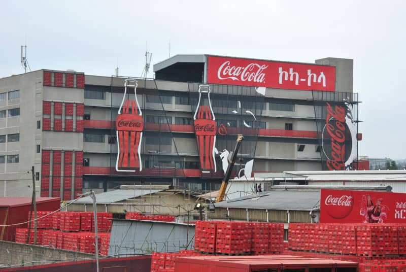

Economic Inclusion
- Built model collection centers in Entoto Park, Sebeta, and Ambo
- Empowered over 1,000 individuals working on plastic collection through various initiatives including trainings
- Works with over 10 Collection Center Associations & Recyclers to promote recycling
- Established PETCO Ethiopia in 2019
World Without Waste
- Empowers over 15,000 youth & women through entrepreneurial, skill development, and job opportunity initiatives
- Built and handed over 72 kiosks to 288 women returnees
- Established 5 kiosks in Entoto Park to create work opportunities for 263 women wood pickers
- Trained 50 people with disabilities in bamboo crafts
Water Replenishment
- Six Water Access Points benefiting over 6,000 individuals built in Dire Dawa
- One Water Access Point benefiting more than 800 households built in Sebeta
- Water Access Points in the pipeline benefiting over 17,000 individuals in Bahir Dar
CSR
- Constructed three schools in Sebeta, Bahir Dar, and Ambo
- Supported the country during various emergencies including COVID, natural disasters, and war aftermath
- Built power access for the community in Ambo and Sebeta